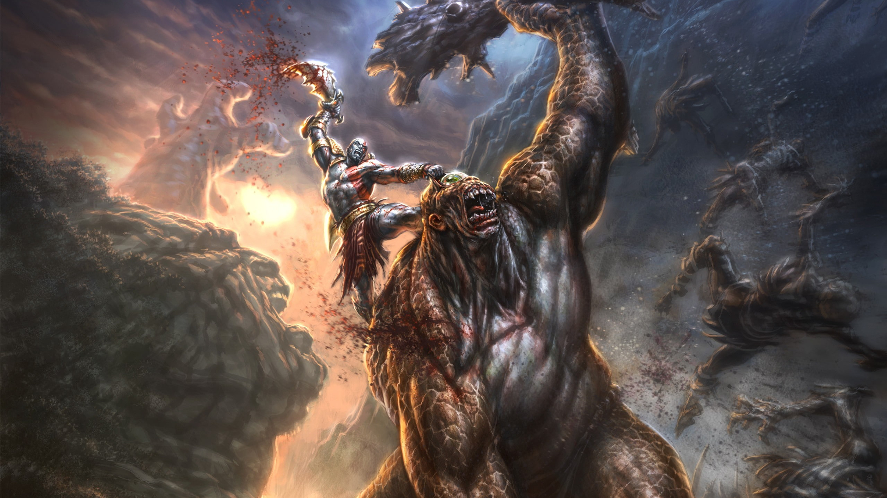
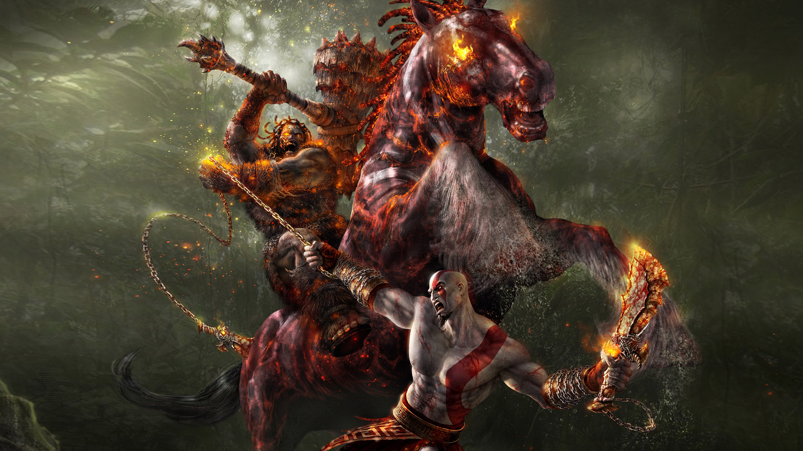

.jpg)
Kratos Lutando Contra um Elefantauros
Os Elefantauros são basicamente elefantes que andam eretos e saem por aí matando tudo que veem pela frente (vem fdp, quero ver dar chicotada agora e.e). São criaturas exclusivas de GoW Ascension.
Na batalha, alguns usam um porrete como arma, que é quebrado pelos próprios após um surto de raiva por apanhar muito de Kratos xD Sem elas, o Elefantauro passa a investir contra Kratos, atacar com a tromba e eventualmente nos agarrar para tentar nos esmagar.

Kratos Lutando Contra um Ciclope
O Ciclope é outra criatura consagrada da Saga e que apareceu em todos os jogos. São sempre vistos como brutamontes fortes, gordos, com uma cara selvagem e sedenta por sangue, vestindo uma tanguinha e claro, com um único olho no meio da testa!
Há várias variantes: Ciclopes Selvagens, Ciclope Tirano, Ciclope Bruto, Ciclope Blindado, Ciclope Rei do Deserto e provavelmente o mais adorado: Ciclope Raivoso, que aparece somente em GoW Ascension e 3 e tem a possibilidade de ser controlado por um tempo!

Kratos lutando contra o Rei dos Barbáros
Também conhecido como "Rei dos Bárbaros", é um antigo inimigo que Kratos matou durante a guerra contra os espartanos, usando a "Blade Of Chaos", recentemente recebidas após o pacto com Ares, o arrancando brutalmente sua cabeça.Pois ele possivelmente voltou do submundo para completar sua vingança, matar Kratos.Depois que Kratos o mata, está a sua disposição o seu martelo gigante, o "Barbariam Hammer".